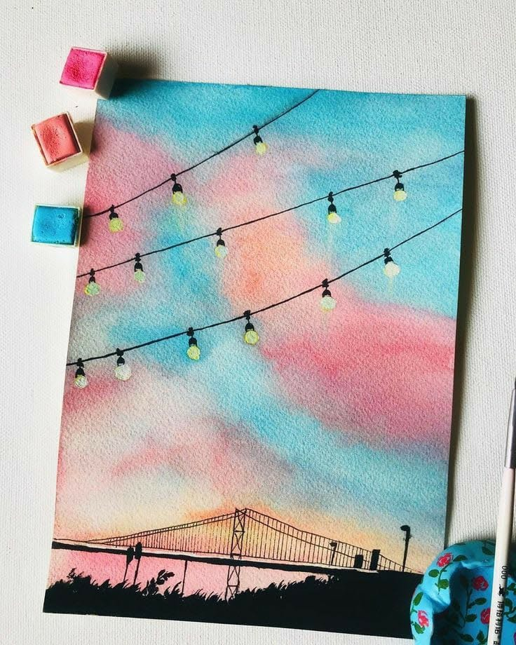
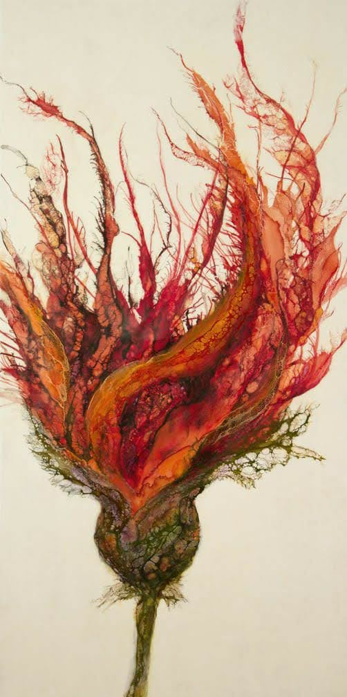

Indian, 34
Members of Prabhakar Pachpute's family have worked in the coal mines of Chandrapur, Central India, for three generations. Chandrapur is known as 'the city of black gold', but the mine has been linked with many health and safety issues. Although Pachpute avoided working in the mines, he draws on its history in his practice. His meticulous drawings are executed in charcoal and use surrealist motifs to address issues of labour. He frequently draws directly onto walls and has created spectacular mural installations and immersive environments of wondrous landscapes and dreamlike figures. These figures are workers with their faces sometimes replaced by lanterns or mining tools, or incorporating actual light switches, reflecting both his surrealistic aesthetic and the subsuming of the individual into the larger labour force. Recently his practice has broadened to engage with various ethical, labour, environmental and economic issues around the world, each transformed through his unique, ethereal vision.
|  |
|
|  |